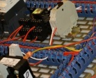
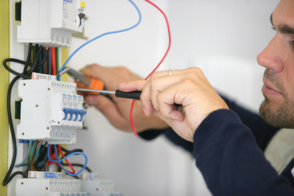
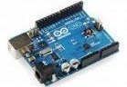
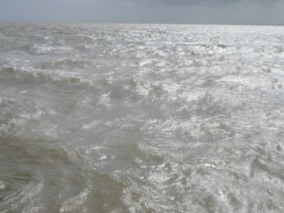
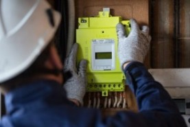
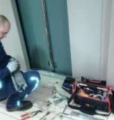

En technique industrielle, il existe plusieurs spécialités industrielles. Le lycée technique d’amitié sino-béninoise d’AKASSATO (LT-ASBA) à débuté avec les spécialités tels que :
L’électricité est une spécialité basée sur l’éclairage domestique en générale et l’installation et la maintenance des machines électriques industrielles.
C’est une filière qui intervient dans la production, la distribution et le transport d’énergie électrique a longe ou petite distance. Il intervient également des la programmation automatique d’éclairage, de sonnerie et autres….
En terme, l’électricité offre plusieurs opportunités. Notons en primo qu’aucune industrie de production ou autre que ce soit ne peut fonctionner sans l’électricité. Grâce à celle-ci l’homme peut exercer ses activités même dans la nuit grâce à la lumière. Commander automatiquement les appareils lumineux…
Plusieurs métiers sont liés à l’électricité tels que :
 Electricien, Electricienne Ouvrier qualifié, Ouvrière qualifiée - Appellation courante pour dénommer la profession de celui ou de celle qui dans une entreprise ou sur chantier est capable à partir des plans qui lui sont soumis de...
 Electromécanicien, Electromécanicienne Le portail du réseau maintenance de l’association française des ingénieurs responsables de maintenance (AFIM) nous présente de façon très complète le portrait de l'électro...
Fablab Manager; responsable de laboratoire de fabrication numérique Ou Responsable de laboratoire de Fabrication Numérique Voici un « job » reconnu officiellement puisqu'il figure en bonne place sur le « portail des métiers de l'internet » portail...
Ingénieur électronicien, Ingénieure électronicienne Ingénieur/e ayant reçu une formation initiale théorique et pratique en électronique autant sur les aspects hardware (composants/ cartes circuits, systèmes) que software. (langage C,C++, Assembleur, Visual Basic,...
Ingénieur en électronique chargé des tests et contrôles Femme, Homme; C'est une fonction qui exige un bagage intellectuel de haut niveau (diplôme d'ingénieur complété lorsque c'est possible par un master professionnel, par un master recherche). Elle exige aussi un...
Installateur de panneaux photovoltaïques Le répertoire officiel des métiers (le ROME) nous guide pour bien comprendre et situer ce métier, pour bien cerner en quoi il consiste. En effet 2 fiches comprennent le terme « photovoltaïque » ...
Maker, Maker girl "Devenez un vrai Maker" Devenez une vraie Maker Girl -1- ?Sommes nous vraiment devant un nouveau profil professionnel ? Cette appellation correspond pour de nombreux spécialistes des métiers et des professions à un...
 Monteur Equipement solaire photovoltaïque Technicien, technicienne qualifié (e) capable d'assurer sur un chantier la pose de panneaux solaires en couverture d'immeubles collectifs ou de maisons individuelles et la mise en service de l'installation. Son secteur d'activité est...
Océanologue Femme, homme; Peut-on esquisser une présentation type de ce scientifique de haut niveau ? Dans un premier temps, pour mieux comprendre les différents parcours de formation susceptibles de conduire à l'exercice d'une...
 Poseur Poseuse de compteurs Linky Technicien – Technicienne; Une activité professionnelle qui a le vent en poupe. Sans aucun doute ! Qu’on en juge par les informations qui suivent:35 millions de compteurs électriques ‘intelligents’...
 Préparateur de voiliers pour la course au large Il s'agit de professionnels qualifiés en charge de la préparation de voiliers participant à des courses au large (comme par exemple le Vendée Globe,la Solitaire du Figaro, la route du rhum …etc.) Le...
Technicien d'équipement en électricité Femme – Homme – Technicienne d’équipement en électricité – Technicien d’équipement en électricité. Poste du niveau IV du point de vue formation. - correspondant à des...
Technicien d'intervention en électrodomestique et multimédia Profil d’une personne - homme ou femme - capable d’installer et de dépanner les appareils électro ménager et multimédia (à l’exclusion des micro-ordinateurs - postes fixes et portables qui...
Technicien de maintenance en micro-électronique Technicienne de maintenance en micro électronique; Profil d’un ou d’une professionnelle capable d’intervenir dans de nombreuses entreprises, laboratoires, bureaux d'études, société de service et de...
Technicien en automatismes Quel est le cœur de ce métier du point des vue des domaines, des techniques et savoir faire ? L’on peut citer l’électricité, l’électronique et l’informatique (à travers la...
Technicien en électricité et automatismes pour le Bâtiment Titre professionnel inscrit au Répertoire National de la Certification Professionnelle – RNCP (rechercher sur Internet: « RNCP Grand public») Ce métier qui s’exerce sur chantiers à partir des...
L’électronique est une science technique, ou science de l’ingénieur, constituant l'une des branches les plus importantes de la physique appliquée, qui étudie et conçoit les structures effectuant des traitements de signaux électriques, c'est-à-dire de courants ou de tensions électriques, porteurs d’informations.
Dans cette définition la notion de l’information est considérée dans le sens le plus large : elle désigne toute grandeur (physique, telle la température, le son ou la vitesse, ou abstraite, telle une image, un code…) qui peut évoluer en temps réel selon une loi inconnue à l’avance, ou plus souvent prévu à cet effet (calcul des équations booléenne).
Dans les systèmes électroniques classiques traitant le monitoring des outils de performance bi-directionnelle d’information, celle-ci est codée par les tensions ou les courants électriques. Les applications électroniques peuvent être divisées selon deux groupes distinct :
le traitement de l’information et la commande. La première englobe les domaines tel que l’informatique, les télécommunications, les mesures, tandis que la seconde s'occupe de la gestion de l'information (elle donne des ordres pour ainsi dire), par exemple les microprocesseurs, les PIC, ou encore les moteurs pas à pas.
Les applications de commande ont pour objet le contrôle du fonctionnement d’un système naturel ou technique. Un contrôle implique généralement la mesure d'un ou plusieurs paramètres contrôlés, sa comparaison avec le modèle ou la valeur souhaitée et, en cas d’erreur, la génération d’une consigne de correction (principe de contre réaction à la base de nombreux systèmes électroniques).
Ainsi, un contrôle peut être vu comme une succession d’opérations de traitement du signal : ceci renvoie à la définition générale donnée plus haut.En effet,
L'électronique est une branche de la physique appliquée, traitant de la mise en forme et de la gestion de signaux électriques, permettant de transmettre ou recevoir des informations.
On associe souvent l'électronique à l'utilisation de faibles tensions et courants électriques. Les faibles grandeurs électriques généralement utilisées dans les applications électroniques, s'expliquent en partie par le fait que si une information peut être transmise avec peu d'énergie, il y a peu d’intérêt à la transmettre avec beaucoup.
Par analogie, lorsque deux personnes veulent échanger une information, elles pourraient le faire en parlant fort. Toutefois, si parler à un volume normal suffit à la transmission de l'information, c'est en général ce qu'elles préfèrent faire, évitant ainsi les contraintes liées au fait de parler fort.
À noter qu'il existe une discipline nommée « électronique de puissance », mais celle-ci est en fait une branche de l'électrotechnique et non de l'électronique.
On date généralement les débuts des applications de l'électronique à l'invention du tube électronique en 1904, l'ancêtre du transistor. Ce dernier compose actuellement l’essentiel des processeurs grand public.
En raison du succès des appareils fonctionnant grâce à l'électronique et de leur impact sur la vie courante, le grand public amalgame parfois l'électronique avec la cybernétique (science de l'automatique), ou encore avec l'informatique.
Technicien en électronique Technicienne en Electronique- Jeune Professionnel (elle) titulaire au minimum d’un Bac Pro BAC PRO SEN EIE : Systèmes Electroniques Numériques Electronique Industrielle et Embarquée. Il ou elle peut également...
Technicien en installations de surveillance intrusion Voici un / une professionnel - elle qui possède un titre correspondant à une référence du RNCP - le répertoire national des certifications professionnelles. La dénomination officielle dans le...
Technicien en solutions d'impression et de gestion de documents Femme; Homme; En capacité d'installer, de dépanner, de réparer du matériel de reprographie et de duplication (imprimante de bureau, imprimante laser, photocopieur multifonctions couleur; matériel de moyenne et...
Technicien énergies renouvelables En raison des besoins croissants en énergie de nos pays, il est devenu indispensable, à côté des énergies fossiles dont l'épuisement est désormais prévisible, de se tourner vers l'exploitation...
Technicien Photocopieur; Technicienne Photocopieur Professionnel, Professionnelle - Qu'on s'y trompe pas nous sommes devant un professionnel qui exerce à part entière un métier exigeant. A la croisée de plusieurs techniques, l'électrotechnique et l'informatique,...
Technicien Supérieur - Développement en Electronique Femme, Homme; Technicien Supérieur en charge des travaux de développement d'applications électroniques (Analyse et programmation)- soit sur process soit sur carte. Il travaille à la mise au point de nouvelles...
Technicien supérieur en énergies renouvelables Technicien, Technicienne; Les énergies renouvelables représentent aujourd’hui une alternative de plus en plus crédible si l’on prend en compte l’épuisement des énergies fossiles et la...
Technicien Supérieur Spécialisé Optoélectronique Au-delà de l’optique médicale, (les lunettes, les verres correcteurs) l’optique en se rapprochant de l’informatique et de l’électronique a ouvert un très vaste domaine d’applications...
Technologue en physique appliqué Jeune femme; jeune homme; Dénomination d'un métier qui figure dans le Guide Pratique Technicien en électronique Technicienne en Electronique- Jeune Professionnel (elle) titulaire au minimum d’un Bac Pro BAC PRO SEN EIE : Systèmes Electroniques Numériques Electronique Industrielle et Embarquée. Il ou elle peut également...
Technicien en installations de surveillance intrusion Voici un / une professionnel - elle qui possède un titre correspondant à une référence du RNCP - le répertoire national des certifications professionnelles. La dénomination officielle dans le...
Technicien en solutions d'impression et de gestion de documents Femme; Homme; En capacité d'installer, de dépanner, de réparer du matériel de reprographie et de duplication (imprimante de bureau, imprimante laser, photocopieur multifonctions couleur; matériel de moyenne et...
Technicien énergies renouvelables En raison des besoins croissants en énergie de nos pays, il est devenu indispensable, à côté des énergies fossiles dont l'épuisement est désormais prévisible, de se tourner vers l'exploitation...
Technicien Photocopieur; Technicienne Photocopieur Professionnel, Professionnelle - Qu'on s'y trompe pas nous sommes devant un professionnel qui exerce à part entière un métier exigeant. A la croisée de plusieurs techniques, l'électrotechnique et l'informatique,...
Technicien Supérieur - Développement en Electronique Femme, Homme; Technicien Supérieur en charge des travaux de développement d'applications électroniques (Analyse et programmation)- soit sur process soit sur carte. Il travaille à la mise au point de nouvelles...
Technicien supérieur en énergies renouvelables Technicien, Technicienne; Les énergies renouvelables représentent aujourd’hui une alternative de plus en plus crédible si l’on prend en compte l’épuisement des énergies fossiles et la...
Technicien Supérieur Spécialisé Optoélectronique Au-delà de l’optique médicale, (les lunettes, les verres correcteurs) l’optique en se rapprochant de l’informatique et de l’électronique a ouvert un très vaste domaine d’applications...
Technologue en physique appliqué Jeune femme; jeune homme; Dénomination d'un métier qui figure dans le Guide Pratique
Les automobiles d’aujourd’hui sont des machines complexes et passionnantes. Un bon mécanicien en connaît tous les rouages.
Avec notre formation complète (DEP en mécanique automobile), vous saurez tout sur la réparation des circuits électroniques et des systèmes électriques, l’entretien périodique des véhicules automobiles,
l’entretien du système d’alimentation et d’injection, la mise en état de fonctionnement des moteurs, la suspension, la direction, le système de freinage et les composantes de la transmission de pouvoir.
Le mécanicien automobile démonte, contrôle, répare et règle aussi tous les systèmes mécaniques du véhicule. Il répare des automobiles de marques différentes.
Les compétences nécessaires pour exercer ce métier ayant suivi l’évolution des nouveaux
équipements électroniques (système ABS, ordinateur de bord, GPS, airbags, climatisation, alarme…),
le mécano d’antan fait place aujourd’hui au mécanicien technicien de maintenance automobile.
Outre l’entretien auto courant : graissage, vidange, contrôle des principaux organes,
le mécanicien qualifié effectue des travaux se rapportant à d’autres éléments : moteur, boîte de vitesse, embrayage,
essieux, roues, direction, freins, suspension, équipement électrique.
Il commence toujours par établir un diagnostic en détectant la panne. En cas d’avarie, il démonte les pièces défectueuses et les remplace.
Ensuite, il effectue les mises au point et réglages indispensables.
Il peut enfin procéder à différents essais au garage ou sur la route.
Il exerce comme salarié chez un artisan garagiste, dans un centre de réparation
rapide, chez un concessionnaire ou comme artisan à son compte.
Il travaille souvent dans une position physique inconfortable pour accéder
aux différents organes du véhicule dans l’odeur d’essence et d’huile
Les formations sont nombreuses et spécialisées :
- CAP maintenance des véhicules options voitures particulières ; véhicules de transport routier ; motocycles,
- CAP réparation des carrosseries,
- MC (mentions complémentaires) 1 an après un CAP du secteur auto : maintenance des moteurs Diesel
et de leurs équipements ; maintenance des systèmes embarqués de l’automobile,
- CQP (certificat de qualification, organisé par la branche professionnelle, en contrat de qualification) :
mécanicien spécialiste automobile ; contrôleur technique ; opérateur service rapide,
technicien expert après vente automobile…liste complète des CQP sur
www.metiersdelauto.com
- Bac pro maintenance de véhicules options voitures particulières ; véhicules de transport routier ; motocycles,
- Bac pro réparation des carrosseries,
Enfin, certaines marques d’automobiles ont organisé des écoles d’entreprises
qui leur sont propres telles que Renault, Peugeot, BMW ou Mercedes. Elles proposent des
formations « maison » mais généralement spécialisée dans la vente.
Le mécanicien auto (ou mécanicien de maintenance) peut prendre des responsabilités
en devenant chef d’atelier ou en se mettant à son compte.
Il peut aussi se diriger vers des postes de mécanicien de service rapide, de contrôleur technique,
de dépanneur remorqueur et, avec une formation complémentaire, devenir électronicien auto.
Il peut aussi se spécialiser dans la mécanique de compétition.
Une formation du type BTS NRC ; BTS technico-commercial ; BTS après-vente auto le conduit à des
fonctions et des responsabilités dans la vente, le SAV.
Le terme « informatique » résulte de l'association du terme « information » au suffixe « -tique » signifiant « qui est propre à ».
Comme adjectif, il s'applique à l'ensemble des traitements liés à l'emploi des ordinateurs et systèmes numériques. Comme substantif, il désigne les activités liées à la conception et à la mise en œuvre de ces machines.
Des questions de télécommunications comme le traitement du signal ou la théorie de l'information, aussi bien que des problèmes mathématiques comme la calculabilité s'y rattachent.
Dans le vocabulaire universitaire américain, l'informatique (« computer science ») désigne surtout l'informatique théorique :
un ensemble de sciences formelles qui ont pour objet d'étude la notion d'information et des procédés de traitement automatique de celle-ci, l'algorithmique.
Les applications de l'informatique depuis les années 1950 forment la base du secteur d'activité des technologies de l'information et de la communication.
Ce secteur industriel et commercial est lié à la fois aux procédés (logiciel, architectures de systèmes) et au matériel (électronique, télécommunication). Le secteur fournit également
de nombreux services liés à l'utilisation de ses produits : développement, maintenance, enseignement, assistance, surveillance et entretien.
L'informatique est un domaine d'activité scientifique, technique et industriel concernant le traitement automatique de l'information par l'exécution de programmes informatiques par des machines : des systèmes embarqués, des ordinateurs, des robots, des automates, etc.
Ces champs d'application peuvent être séparés en deux branches, l'une, de nature théorique, qui concerne la définition de concepts et modèles, et l'autre, de nature pratique, qui s'intéresse aux techniques concrètes de mise en œuvre.
Certains domaines de l'informatique peuvent être très abstraits, comme la complexité algorithmique, et d'autres peuvent être plus proches d'un public profane.
Ainsi, la théorie des langages demeure un domaine davantage accessible aux professionnels formés (description des ordinateurs et méthodes de programmation), tandis que les métiers liés aux interfaces homme-machine sont accessibles à un plus large public.
Les principaux domaines de l’informatique :
Le génie civil représente l'ensemble des techniques de constructions civiles. Les ingénieurs civils ou ingénieurs en génie civil s’occupent de la conception, la réalisation, l’exploitation et la réhabilitation d’ouvrages de construction et d’infrastructures dont ils assurent la gestion afin de répondre aux besoins de la société, tout en assurant la sécurité du public et la protection de l’environnement. Très variées, leurs réalisations se répartissent principalement dans cinq grands domaines d’intervention :
structures, géotechnique, hydraulique, transport, et environnement.
La spécialité de génie civil a pour mission de former des ingénieurs dans le domaine du bâtiment, des travaux publics. De part sa formation généraliste et transdisciplinaire, l’ingénieur issu de cette spécialité, possède une base scientifique large et dispose de véritables outils de conception performants et polyvalents, ce qui lui confère toutes les composantes d'un cadre supérieur :
gestion technique et financière, droit, communication, dimension humaine, etc.
La formation aux lycées s’appuie sur son programme pédagogique pour permettre à chaque élève d’acquérir les connaissances scientifiques, techniques, technologiques fondamentales et de développer ses capacités d'analyse et de synthèse. Celle-ci est complétée par l’intégration professionnelle progressive en entreprises et ce, à travers divers stages et projets.
Aussi, les élèves de la spécialité génie civil sont encouragés à effectuer un séjour d’une durée minimale de trois mois à l'étranger, sous forme de stages, semestres d’études ou de projets de fin d'études.
Depuis les deux dernières décennies, la réhabilitation et la réfection des infrastructures existantes constituent des nouveaux défis pour les ingénieurs civils qui doivent répondre à des exigences de plus en plus sévères en ce qui a trait à la sécurité des ouvrages et à leurs impacts environnementaux.
À ces exigences s’ajoutent les défis posés par l’utilisation de nouveaux matériaux et de techniques innovatrices de construction, le contrôle de la pollution et la gestion des ouvrages.
Les ingénieurs civils contribuent aussi à la recherche de solutions innovatrices et économiques pour minimiser les conséquences des catastrophes naturelles telles que les crues exceptionnelles, les tempêtes de verglas, les glissements de terrain, les tornades et les tremblements de terre.
En plus des connaissances scientifiques et technologiques, les ingénieurs civils doivent faire preuve de créativité afin de trouver des solutions qui tiennent compte des impacts sociaux, économiques et environnementaux de leurs projets.
Leur formation variée, qui les expose à de nombreuses facettes du travail en ingénierie, fait qu’ils sont souvent appelés à occuper des postes de gestion, de coordination et de direction.
La formation offerte à l’École Polytechnique vise à préparer les futurs diplômés à ces défis bien d’aujourd’hui, présents dans la vaste gamme de projets sur lesquels ils seront appelés à travailler.
L’ingénieur civil s’occupe de la conception, de la construction, de la gestion, de l'entretien et de la réparation d'ouvrages afin de répondre aux besoins grandissants de la société en assurant la sécurité du public et dans le respect de l’environnement et du développement durable (assurer les besoins actuels sans compromettre les besoins futurs). Ses réalisations sont variées et couvrent les domaines des structures (bâtiments, ponts, barrages, lignes de transmission d’énergie), de la géotechnique
(fondations, excavations, barrages en terre, tunnels, routes), de l’hydraulique (ouvrages hydrauliques, aménagements fluviaux, portuaires et d'irrigation, contrôle des inondations), des transports (planification, tracé et sécurité routière, aéroports, voies ferrées) et de l’environnement (traitement, collecte et distribution des eaux usées et potables, impact des projets sur l'environnement, gestion de déchets, remise en état des terrains contaminés).
Certains, plus spécialisés en analyse numérique, en informatique ou en gestion, peuvent travailler dans des secteurs qui ne sont pas reliés directement au génie civil.
La formation reçue et les différentes expériences vécues pendant son passage au lycée et quelque année d’étude universitaire donnent à chaque jeune diplômé des capacités polyvalentes pour devenir :
L’électrotechnique est l’ensemble des applications industrielles de l’électricité en générale. Autrement dit, l’électricité industrielle. Après trois ans d’étude au lycée, les élèves inscrits en électrotechnique doivent passer le BAC F3 afin de poursuivre les études universitaires.
L'électronique est à la base des progrès que l'on observe dans de très nombreux secteurs d'activité(comme par exemple, dans l'industrie des ordinateurs, dans les transports, idem pour la radio et la télévision,
dans les télécommunications, sans oublier celle de l'armement ou même enfin dans les équipements médicaux) Circuits intégrés,cartes, puces sont donc les "composants" de cette industrie.
Les emplois, hors ceux occupés par les opérateurs et opératrices, dans les usines de fabrication des cartes et puces exigent de plus en plus de connaissances pour les besoins de conception, de contrôle et de maintenance.
Ingénieurs, techniciens supérieurs, analystes, informaticiens et consultants spécialisés sont ainsi de plus en plus nombreux pour répondre aux nouveaux besoins des appareils professionnels ou grand public de cette nouvelle génération électronique.
L’électrotechnicien est d’abord un électricien et de ce fait, il peut intervenir dans tous les domaines liés à l’électricité. Il s’agit entre autre de l’électricité bâtiment, l’électricité industriel, l’électricité aéronautique, l’électromécanique et plein d’autre encore.
La filière présente assez d’avantages. Celui qui fait l’électricité peut facilement s’installer à son propre compte après sa formation. Il a également plusieurs options qui lui sont proposé pour les études universitaires étant donné que l’électricité est un domaine vaste.
Plusieurs métiers sont liés à l’électrotechnique tels que :
Agent d'intervention sur équipements électroniques il s'agit d'un titre du Répertoire National des Certifications Professionnelles – le RNCP- la fiche officielle est Agent d'interventionsur équipements électroniques et numériques. De plus la consultation de sites...
 Agent de maintenance d'ascenseurs Le répertoire national de certification professionnelle nous propose une présentation complète de ce métier. On se sert pour la plupart d'entre nous quotidiennement des acenseurs et l'agent de maintenance ou...
Agent de maintenance des équipements industriels Femme, Homme; CAP minimum, Bac Pro souhaitable; Présentation, qui, selon les secteurs d'activité, peut recouvrir des profils différents en fonction de la formation initiale et surtout de l’expérience acquise en...
Agent de maintenance sur systèmes d'impression et de reprographie Femme ; homme ; Il est intéressant de reprendre succinctement les 3 composantes de ce métier telles qu'elles sont décrites par le RNCP: le répertoire national des certifications professionnelles. >1° Etre...
Agent de montage et de câblage en électronique Métier accessible aussi bien pour les femmes que pour les hommes. Il est intéressant de reprendre dans cette présentation quelques annonces récentes d'offres de poste d'agent de montage et de câblage...
Artisan du bâtiment Nous regroupons sous cette appellation tous les artisans qui interviennent sur les chantiers de construction, notamment pour les travaux neufs et ou de rénovation au niveau de l'habitat individuel comme au niveau de l'habitat collectif et...
Automaticien Lorsque l’on recherche dans les fiches métier de Pôle Emploi (le ROME- Répertoire Officiel des Métiers) l’on découvre qu’il y a de nombreuses appellations référencées...
Cadre Terme générique désignant en France la personne - femme ou homme - qui occupe dans les entreprises et ou les organisations une position, une situation, d'un niveau élevé avec, ou non, une...
Cadre technique de production -Exploitation de gisement Cette présentation s'appuie sur les informations publiées par l'université de Rennes 1 (IUT de Lannion) qui présente une licence professionnelle Instrumentation pour l'exploration et l'exploitation...
Chargé (ée) d'études techniques photovoltaïques Technicienne, Technicien, Technicienne supérieure, Technicien supérieur d’un niveau au moins égal à celui d’une licence professionnelle en informatique industrielle, électronique,...
Chargé/e de projet Démantèlements et Déchets nucléaires C'est une licence professionnelle (celle de l'Université de Lyon 1 Département Physique de la Faculté des Sciences et Technologies) qui se trouve à l'origine de cette référence. La fiche de...
Designer Interactif Sommes nous engagés par les travaux des designers interactifs dans une nouvelle étape « un peu magique » de l'évolution des biens et objets matériels et numériques ? Poser la...
Electricien d'équipement Electricien d'équipement, un métier reconnu comme étant « au coeur » des métiers du bâtiment et des métiers de l'industrie tant le travail de ce professionnel apporte pourrait-on dire...